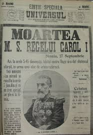

Domnia îndelungată a lui Carol a ajutat dezvoltarea rapidă a statului român. Statul însuși însă – sub domnia lui Carol s-a dezvoltat într-un mod în care administrația era una coruptă și ineficientă, iar puterea marilor proprietari de pământ – care-l siliseră să abdice pe Alexandru Ioan Cuza rămăsese intactă.
Spre sfârșitul domniei sale și începutul Primului Război Mondial, Regele dorea să intre în război de partea Puterilor Centrale, în timp ce opinia publică era de partea Antantei. Carol a semnat un tratat secret în 1883, care lega România de Tripla Alianță și, deși tratatul trebuia activat doar în cazul în care Rusia imperialistă ar fi atacat unul dintre membrii tratatului, Carol era convins că cel mai onorabil ar fi fost intrarea în război de partea Imperiului German. În 21 iulie / 3 august 1914 a fost convocată o întrunire de urgență a Consiliului de Coroană unde Carol le-a comunicat acestora existența tratatului și și-a exprimat dorința sa. A întâmpinat o opoziție fermă din partea majorității membrilor Consiliului de Coroană.
Carol I moare pe 27 septembrie/10 octombrie 1914. Viitorul rege Ferdinand, sub influența soției sale, regina Maria, a fost mai dispus să asculte opinia publică.
Centru de Informare
Contact: Colegiul Național Mihai Viteazul Slobozia
Telefon: 0788455534
E-mail: cnmv.slob@cnmvslobozia.ro